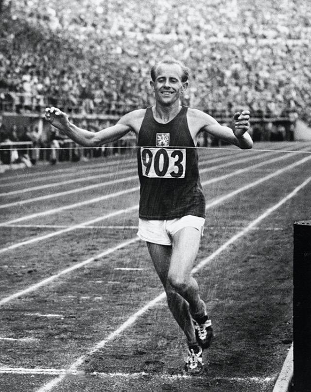
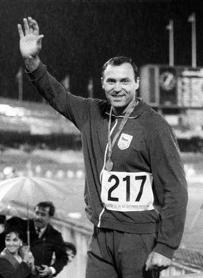
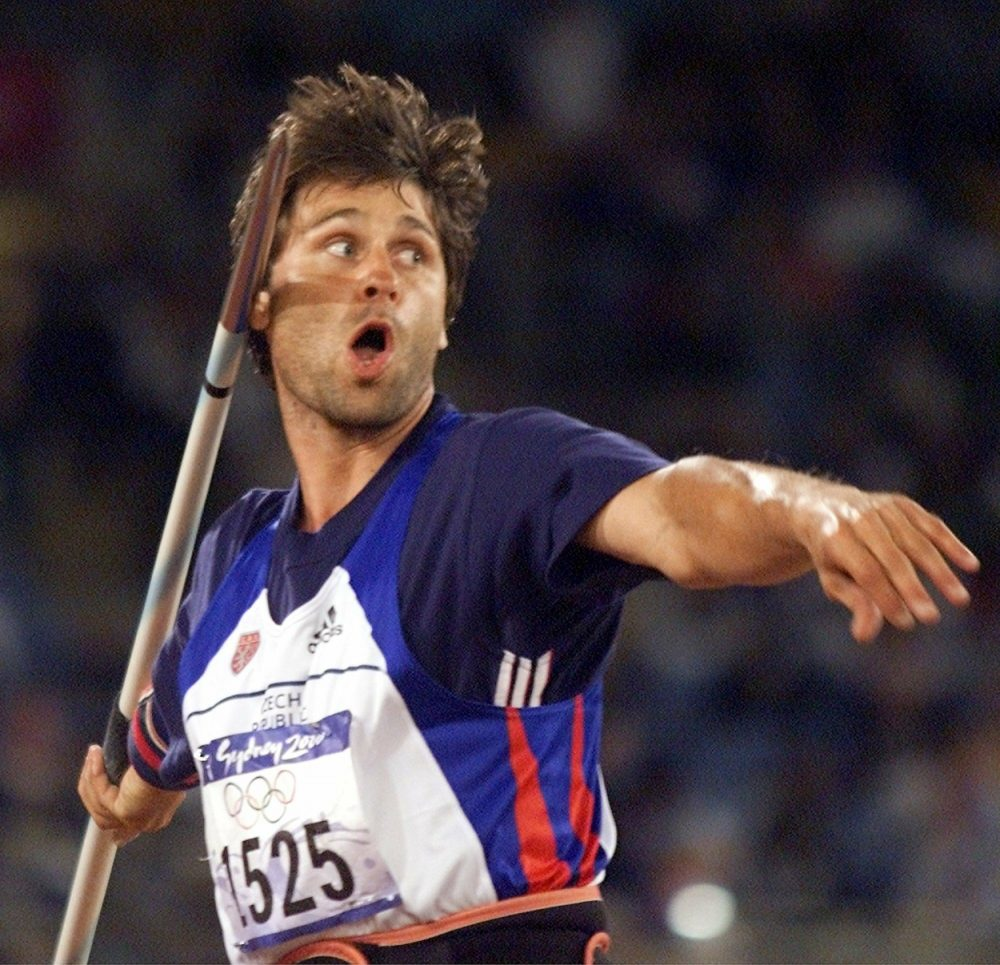

Emil Zátopek
Emil Zátopek was a Czechoslovak long-distance runner best known for winning three gold medals at the 1952 Summer Olympics in Helsinki. He won gold in the 5,000 metres and 10,000 metres runs, but his final medal came when he decided at the last minute to compete in the first marathon of his life.He was nicknamed the "Czech Locomotive".
In 1954, Zátopek was the first runner to break the 29-minute barrier in the 10,000 metres. Three years earlier in 1951, he had broken the hour for running 20 km. He was considered one of the greatest runners of the 20th century and was also known for his brutally tough training methods. He was the originator of interval training and hypoventilation training.
In February 2013, the editors at Runner's World Magazine selected him as the Greatest Runner of All Time. He is the only person to win the 5,000 metres (24 July 1952), 10,000 metres (20 July 1952) and Marathon (27 July 1952), in the same Olympic Games.
Source: Wikipedia

Ludvík Daněk
Ludvík Daněk was a Czechoslovak discus thrower, who won the gold medal at the 1972 Olympic Games with a throw of 64.40 m (211'3").
Daněk was born in Blansko, and competed in four Summer Olympics for Czechoslovakia, winning silver in 1964 Olympics, bronze in 1968 Olympics and gold in 1972 Olympics. He set three world records in discus throw, of 64.55 m in 1964, 65.22 m in 1965 and of 66.07 m in 1966. He also won several medals at the European Athletics Championships. He was the gold medallist at the 1971 European Athletics Championships and was the silver medallist three years later at the 1974 European Athletics Championships.
After retiring from competitions Daněk became a sports administrator, and served as vice-president of the Czech athletics federation. The location where he set his first world record in 1964 is now celebrated with a memorial circle, and the venue in Turnov is now called the Ludvík Daněk Stadium. He died in Hutisko-Solanec near Vsetín, aged 61. Since 1999, the year following his death, the stadium has hosted an annual track and field meeting in his honour – the Ludvík Daněk Memorial.
Source: Wikipedia

Jan Železný
Železný was born in Mladá Boleslav, Czechoslovakia. He won the gold at the 1992, 1996 and 2000 Summer Olympic Games and silver in the 1988 Olympics as well as three World Championship titles; in 1993, 1995 and 2001.
Železný holds the world record, at 98.48 metres (323 ft 1 in) set in 1996, and the World Championships record of 92.80 m, set in 2001. On 26 March 1997 in Stellenbosch, South Africa, Železný threw over the 90m barrier five times in a single meeting. Until September 2020, Železný was also the only athlete to throw more than 95 meters with the new type of javelin, something he achieved three times.
He planned to retire after the 2006 European Championships in Gothenburg, where he won the bronze with a throw of 85.92 m. He took leave of his career on 19 September 2006 on exhibition in Mladá Boleslav, the place where he started with athletics. He coaches Vítězslav Veselý, and is the former coach of Barbora Špotáková.
Source: Wikipedia
My name is Ladislav Topfer, I am student-athlete coming from Czech Republic. I have had the opportunity to wear the national uniform at the Junior World Championship in 2018 and year later in the Junior European Championship. Wearing the same colors as these great athletes mentioned above is extremely motivating. And as every other athlete I dream about joining them and competing at the Olympics.